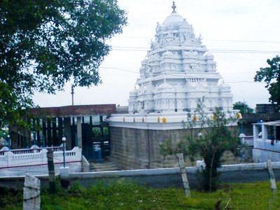
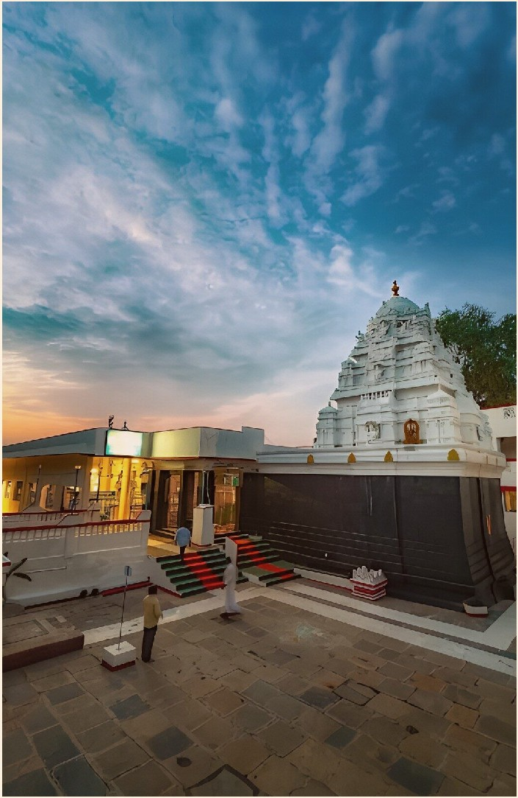
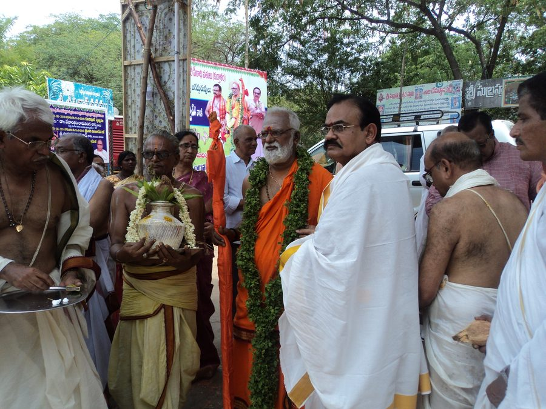

The grace of Tirumala, on the Srigiri Hills.
A spiritual home for generations of devotees in Ongole since 1997.
Sacred Architecture and Divine Presence
Experience the holiness and serene atmosphere of Sri Venkateswara Swamy's abode.

Temple Architecture
Garbha Gudi and Gopuram constructed following traditional Agama Shastra principles on the peaceful Srigiri hills.

Sri Venkateswara Swamy
Consecrated sacred deities that bring the divine grace and blessings of Bhagawan Balaji to all visiting devotees.

Spiritual Guidance
Blessed under the patronage of Sri Siddheswar Peetham and founding guidance of Sri Aluru Venkata Ramana Rao Garu.
About Srigiri Temple
History, Consecration, Spiritual Patronage and Community Initiatives
How Srigiri Began and Founding History
Srigiri Sri Venkateswara Swamy Temple was established in 1997 on the serene Srigiri hills of Ongole, Andhra Pradesh. Built as a sacred place of devotion, the temple stands as a spiritual home for generations of devotees.
The temple's consecrated deities were established under strict adherence to Vaikhanasa Agama Shastra, ensuring that the divine energy and grace of Lord Venkateswara bless all who visit.
Spiritual Patronage and Leadership
Srigiri operates under the spiritual guidance of Sri Siddheswar Peetham. His Holiness Sri Sri Sri Siddheswarananda Bharathi Swamiji has blessed the temple and its initiatives.
Founding visionary Sri Aluru Venkata Ramana Rao Garu and dedicated trustees have nurtured the temple into a renowned kshetra of spiritual growth and community service.
Governance, Deities and Daily Life
The temple is managed transparently by the Board of Dharmakarthas. All offerings received via the audited Hundi are strictly utilized for temple maintenance, daily rituals, and community welfare programs.
The temple receives no government or TTD funding, relying entirely on the devotion and contributions of its community.
Community Initiatives and Chinmaya Balavihar
Beyond daily worship, Srigiri conducts the Chinmaya Balavihar program, imparting moral values, Vedic wisdom, and cultural heritage to children.
Sevas and Rituals
Daily, Weekly, Monthly and Festival Worship Schedule
Daily Sevas
| Seva Name | Timing | Description |
|---|---|---|
| Suprabhatam | 6:00 AM | Awakening the Lord with sacred chants and stotrams. |
| Tomala Seva | 6:30 AM | Adorning the deity with fresh flower garlands. |
| Archana | 7:30 AM and 6:30 PM | Recitation of Sahasranama with sacred offerings. |
| Nivedana and Aarti | 12:00 PM and 8:00 PM | Prasadam offering and evening camphor illumination. |
Weekly and Monthly Special Sevas
| Seva / Festival | Schedule | Significance |
|---|---|---|
| Abhishekam | Every Friday | Holy bath to Sri Venkateswara Swamy Moolavar. |
| Srivari Unjal Seva | Monthly / Special Days | Swing festival accompanied by Classical Carnatic music. |
| Suvasinula Kumkumaarchana | Navarathri / Monthly | Sacred kumkum worship for married women. |
| Sahasra Deepalankarana | Festival Days | Illumination of 1000 lamps around the temple corridor. |
Enroll for a Seva or Book a Life-Event Ritual
For seva sponsorship, Kalyanothsavam booking, or life-event rituals, please contact the temple manager directly via phone or WhatsApp.
Book Seva via WhatsApp (+91 92464 65282)Darshan Information and Contact
Timings, Visitor Guidelines, Temple Address and Contact Numbers
Temple Opening and Darshan Hours
Devotees are welcome for peaceful darshan during the following daily schedule:
Morning Session
6:00 AM – 12:30 PM
Evening Session
5:00 PM – 8:30 PM
Contact and Location
Temple Address
Srigiri Sri Venkateswara Swamy Temple, Srigiri Hills, Ongole, Andhra Pradesh